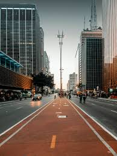
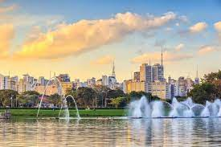

Passear na Avenida Paulista
um dos principais centros financeiros da cidade, a Avenida Paulista também possui diversas opçôes de entreterimento Endereço do Museu de arte dde sâo paulo ,do teatro gazeta e muitos outros, a regiâo é a re de facíl acesso graças as deversas linhas de ônibus que cruzam a avenida e a linha de metro que passa por baixo dela.
Os bares da vila madalena

depois de um dia de trabalho , nada melhor o que um bom chopp, um petistico e uma conversa de uma mesa de bar. Opçôes de sobra na regiâo das ruas Aspicuelta, Fradique continho wisard.
O parque Iperapuera
Um dos cartôes postais da cidade o parque dispôes de mais de 1,5km² de área verde, e lagos artificiais e pista de cooper e ciclismo. e se isso nao fosse o suficiente, o parque costuma ser palco de diversos eventos culturais ao longo do ano.